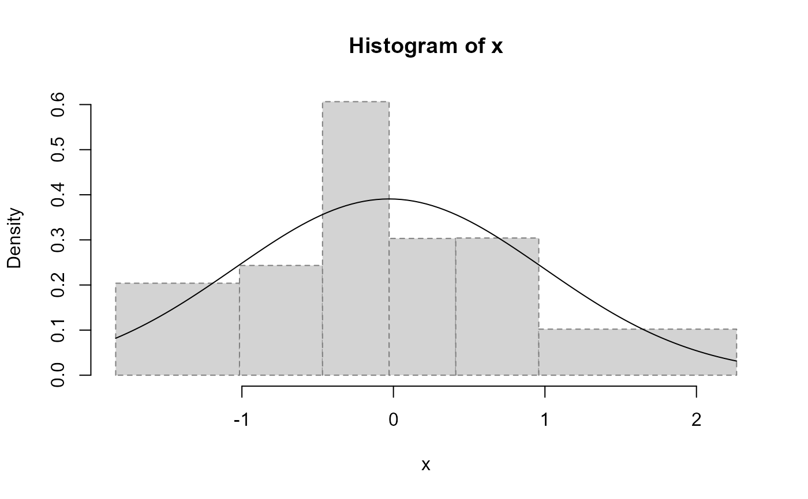

Performs the chi-squared goodness-of-fit test for a continuous distribution by grouping data into bins (also called intervals, classes or cells) with equal probabilities under the null hypothesis.
chisq.cont.test( x, distribution = "norm", nclass = floor(length(x)/5), output = TRUE, nestpar = 0, ... )
| x | numeric vector containing the observed values. |
|---|---|
| distribution | character string naming a continuous distribution,
such as "norm" or "unif" (the cumulative distribution |
| nclass | number of bins. |
| output | logical; if |
| nestpar | number of estimated parameters (composite null hypothesis). |
| ... | parameters of the distribution (specified by |
A list with class "htest" containing the following components:
the value the chi-squared test statistic.
the degrees of freedom of the approximate chi-squared distribution of the test statistic.
the p-value for the test.
a character string indicating the type of test performed.
a character string with the actual x argument name.
a character vector with the class labels.
the observed counts.
the expected counts under the null hypothesis.
the Pearson residuals, (observed - expected) / sqrt(expected).
nx <- 30 x <- rnorm(nx) chisq.cont.test(x, distribution = "norm", nestpar = 2, mean = mean(x), sd = sqrt((nx - 1) / nx) * sd(x))  #> #> Pearson's Chi-squared test table #> classes observed expected residuals #> 1 (-2.4372636,-1.2797839] 7 5 0.8944272 #> 2 (-1.2797839,-0.7073131] 3 5 -0.8944272 #> 3 (-0.7073131,-0.2478731] 3 5 -0.8944272 #> 4 (-0.2478731, 0.2115669] 6 5 0.4472136 #> 5 ( 0.2115669, 0.7840377] 8 5 1.3416408 #> 6 ( 0.7840377, 2.0650249] 3 5 -0.8944272 #> #> Pearson's Chi-squared test #> #> data: x #> X-squared = 5.2, df = 3, p-value = 0.1577 #>